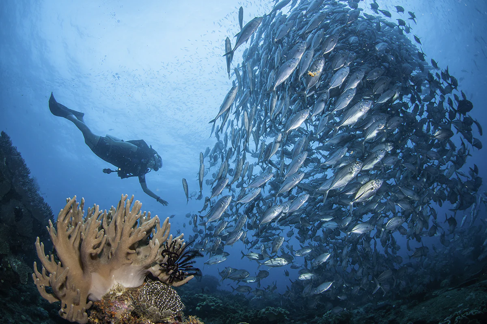

Raja Ampat
The Ultimate Pristine Paradise in West Papua

Far from the view-blocking skyscrapers, dense and hectic concrete jungles, congested traffics, flickering electric billboards, endless annoying noises, and all the nuisances of modern cities, you will find a pristine paradise where Mother Nature and warm friendly people welcome you with all the exceptional wonders in Raja Ampat, the islands-regency in West Papua Province. With all the spectacular wonders above and beyond its waters, as well as on land and amidst the thick jungles, this is truly the place where words such as beautiful, enchanting, magnificent, and fascinating get its true physical meaning.
The Emperor of Four
Situated off the northwest tip of Bird’s Head Peninsula on Papua, the most eastern island of the Indonesian Archipelago, Raja Ampat or literally meaning ‘The Four Kings’ is an archipelago comprising over 1,500 small islands, cays, and shoals surrounding the four main islands of Waigeo, Batanta, Salawati, and Misool. The name Raja Ampat itself is believed to derive from a legend where a woman found seven eggs, with four of them hatch and become the kings of the four main islands, while the other three became a woman, a ghost, and a stone.

For underwater enthusiasts, Raja Ampat definitely offers some of the world’s ultimate experience.
The territory within the islands of the Four Kings is enormous, covering 9.8 million acres
of land and sea, home to 540 types of corals, more than 1,000 types of coral fish and 700
types of mollusks. This makes it the most diverse living library for the world's coral
reef and underwater biota.
According to a report developed by The Nature Conservancy and Conservation International,
around 75% of the world's species live here! Raja Ampat’s sheer numbers and diversity
of marine life and its huge pristine coral reef systems are a scuba dream come true – and
a fantastic site for snorkelers too.

As you embark on your dive here, the phrase "Attention to detail" takes on new meaning as pigmy seahorses swim around your fingers. Manta Rays and wobbegongs will glide right by you. Schools of Tuna fish, giant trevallies, snappers, batfish, and even barracudas are there to complete your underwater "meeting list". Not to mention the friendly assistant of the dugong, and a busy colleague, the turtle. Down at the sea floors, giant sea clams measuring to over one meter in length truly offers one of kind close encounter sensation.
Obviously, there are a lot of diving and snorkeling spots to choose from in these vast waters. Among these are at the Kabui Passage (the very narrow passage between Waigeo and Gam Island crossed by the renowned British explorer, Alfred Russell Wallace in 1860), around the Arborek Island’s Dock, Sawandarek, Yenbuba, Friwen Wall, and many-many more.

While its underwater splendors are beyond exceptional, the landscape above the surface is equally breathtaking. As if it was carefully designed and placed with such aesthetic, the rock islets amidst the clear blue water and bright blue sky in Piaynemo offers some of the most spectacular sceneries on the face of the earth. Looking down from the top of the hill, it almost seems that Mother Nature painted her finest artwork and offers a glimpse of paradise. Further at Wayag Island, you will also find an amazing rock islets formation in an even bigger scale.
The incredible wildlife of Raja Ampat does not stop underwater. Amidst the many thick jungles within the islands, one can still find various bird species including the spectacular Cendrawasih or the bird of Paradise. There is also an endemic species of cuscus, the Waigeou cuscus or Waigeou spotted cuscus (Spilocuscus papuensis) which is a species of marsupial in the family Phalangeridae.

The Local Ambience
Aside from its endless fascinating natural attractions, Raja Ampat also offers the distinct
hospitality of the Papuan. At the Arborek Tourism Village, you can stay at a number of
homestays and mingle with the locals whilst observing their daily life and unique traditions.
When a group of tourists arrived, they usually perform a traditional welcome dance right at
the dock and entertained the ‘guests’ with various Papuan folk songs.
With all its spectacular wonders inland, on the shore, and beyond the waters, and distinct
serene ambiance that you rarely find anywhere else on earth, Raja Ampat truly offers the
ultimate experience ones can only dream of.
So, whether you are an avid diver, occasional snorkeler, or just someone who appreciated
the beauty in every sense, Raja Ampat welcomes you to the Heaven on Earth.
Get Here
To get to Raja Ampat you should first take a flight from Jakarta or Makassar to Sorong.
There are small aircraft to take you to Waisai, the capital of the district of Raja Ampat,
or alternatively, you can take a ferry from the port of Sorong to the islands.
Established in 2012, the Marinda Airport in Waisai, the capital town of Raja Ampat
Regency served flights to and from the city of Sorong. Wings Air served daily flight
between Sorong and Raja Ampat, while Susi Air flight twice a week on Monday and Saturday.
Please be advised that Marinda Airport is still under development and expansion and
located relatively far from any facilities. So be sure to pack some snacks and drinks
as you await your return flights to Sorong.
Alternatively, there are ferries available to get you from Sorong and Waisai and vice versa.
The ferry trip will take about 2 to three hours.
As the main hub to Raja Ampat, the Domine Eduard Osok Airport in Sorong serves flights to
a number of major cities in Papua and Indonesia including Manokwari, Jayapura, Ambon,
Makassar, Manado, and Jakarta.
Garuda Indonesia operates daily flights between Jakarta-Sorong. As do Sriwijaya Air
and Nam Air, Whereas Batik Air flies twice daily between Jakarta and Sorong.